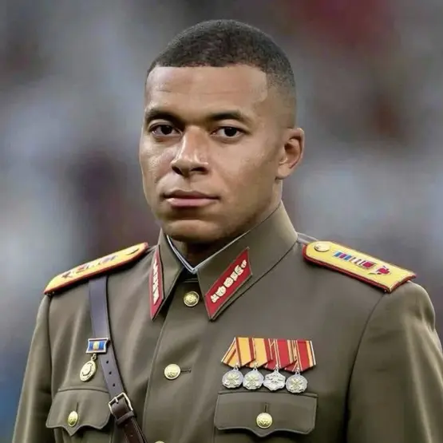

Bienvenue sur mon site
Ce site est consacré à la présentation de Kylian Mbappé, le meilleurs footballeurs du monde. Vous allez y trouverez son parcours, une galerie de photos et mon CV et un formulaire de contact.

Découvrir le site
-
Son parcours
Ses clubs et ses moments forts.
Lire le parcours -
La galerie
Un album de photos de matchs et de célébrations.
Voir la galerie -
contact
Un formulaire de contact.
Aller au formulaire